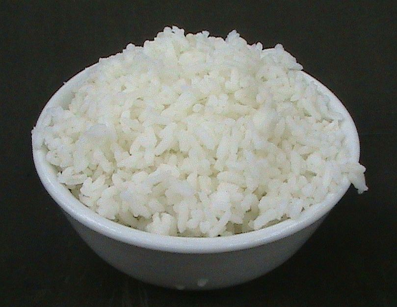

01 SOUP
毎朝、炊く。

鶏ガラと魚介を、毎朝6時から数時間炊きます。澄んでいて、飲み干したくなるスープをめざしています。(見本の文章です)
02 NOODLE
自家製の麺。

小麦の香りが立つ麺を、毎日製麺。スープに合わせて太さを変え、ゆで時間は数秒単位で調整します。
03 TOPPING
具もていねいに。

チャーシューは低温でじっくり、玉子は半熟に。具も一つひとつ、仕込みから手をかけています。
写真・店舗名・内容はすべて見本用の架空のものです
Ramen Kogane
毎朝炊く、やさしいラーメン。
ご挨拶
カウンター10席の、小さなラーメン店です。鶏と魚介のスープを、毎朝6時から炊いています。
麺は自家製。スープに合わせて太さを変え、一杯ずつ丁寧に茹でています。ひとりでも、家族でも、気軽にどうぞ。
おすすめ
澄んだ鶏白湯に、やわらかいチャーシュー。
¥900
コクのあるスープに、たっぷりの野菜。
¥1,000野菜と海鮮のあんかけ。寒い日に。
¥1,100GALLERY


01 SOUP
鶏ガラと魚介を、毎朝6時から数時間炊きます。澄んでいて、飲み干したくなるスープをめざしています。(見本の文章です)
02 NOODLE
小麦の香りが立つ麺を、毎日製麺。スープに合わせて太さを変え、ゆで時間は数秒単位で調整します。
03 TOPPING
チャーシューは低温でじっくり、玉子は半熟に。具も一つひとつ、仕込みから手をかけています。
VOICE
「スープが澄んでいるのにコクがあって、最後まで飲み干しました。」
30代・男性(イメージ例)「麺がもちもちで、チャーシューもやわらかかったです。」
20代・女性(イメージ例)「味噌ラーメンの野菜がたっぷりで満足。また来ます。」
40代・男性(イメージ例)ACCESS
お問い合わせ
000-0000-0000